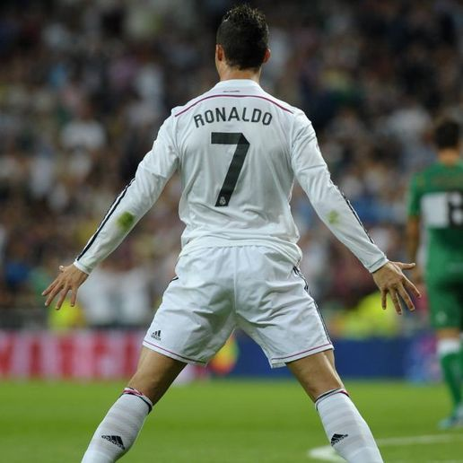
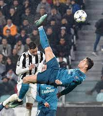
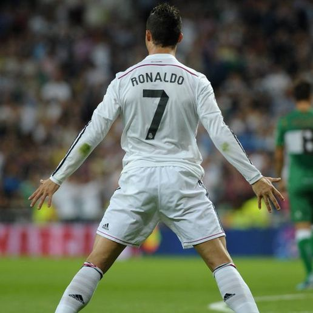
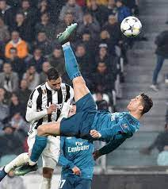

Who is Cristiano Ronaldo?
Cristiano Ronaldo is widely regarded as one of the greatest footballers of all time. Known for his incredible athleticism, precision, and determination, Ronaldo has won numerous trophies with Manchester United, Real Madrid, Juventus, and Portugal.
From Ballon d'Ors to Champions League titles, his legacy transcends clubs and countries, making him a true global icon in the world of sports.
Ronaldo’s Career Highlights
Ronaldo has broken countless records, including most goals in the UEFA Champions League and international football. His journey is marked by consistent excellence, fierce competitiveness, and an unmatched work ethic.
He’s also known for his philanthropy, business ventures, and immense global influence on and off the pitch. Check his stats and legacy through platforms like the Transfermarkt profile.
- 5x Ballon d'Or Winner
- Top Scorer in UEFA Champions League History
- Over 800 Career Goals
- Winner of UEFA Euro 2016 with Portugal
 


